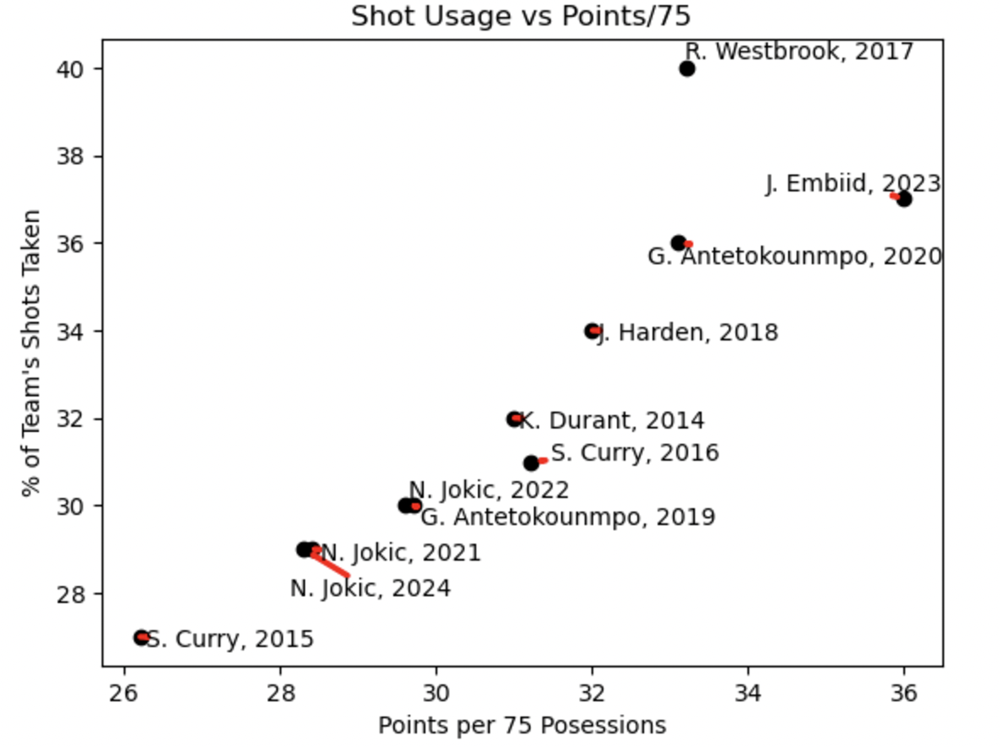
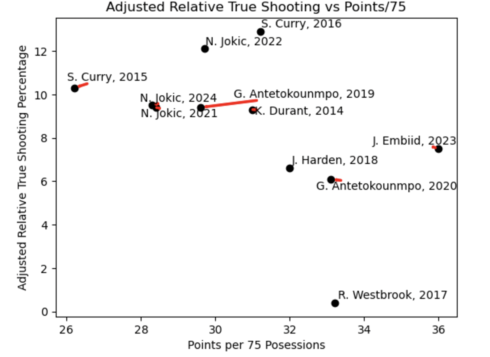
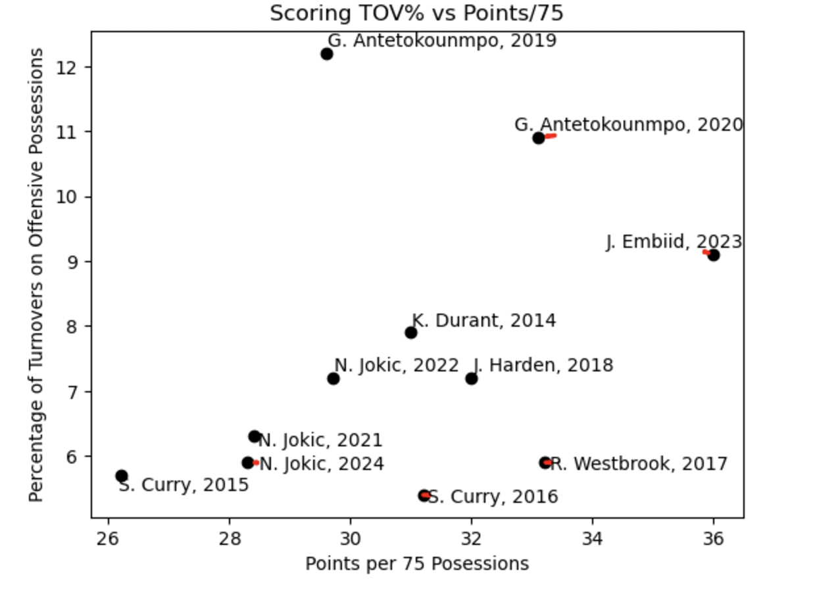
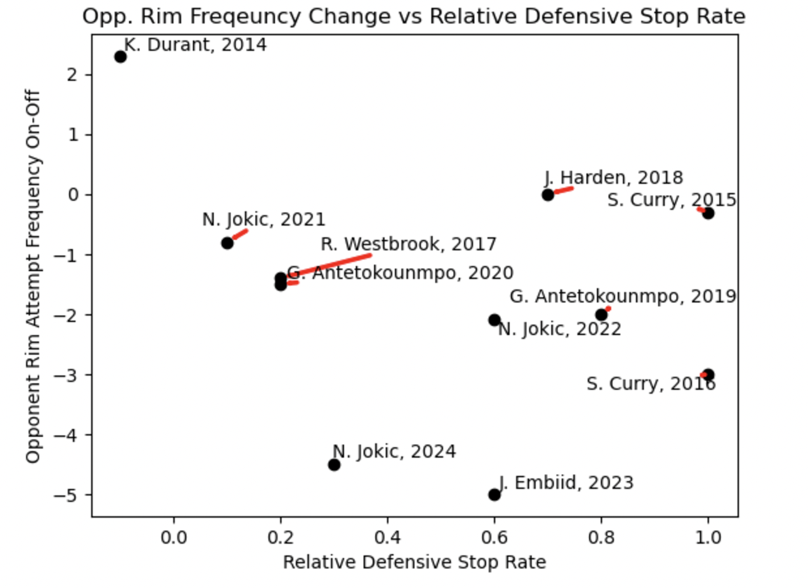
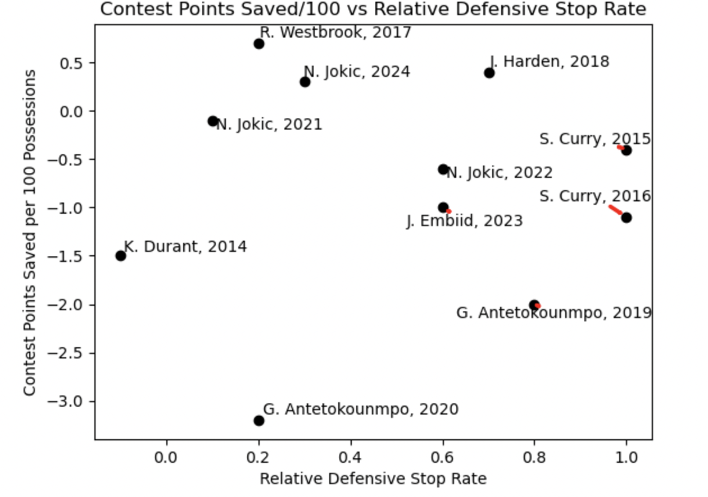
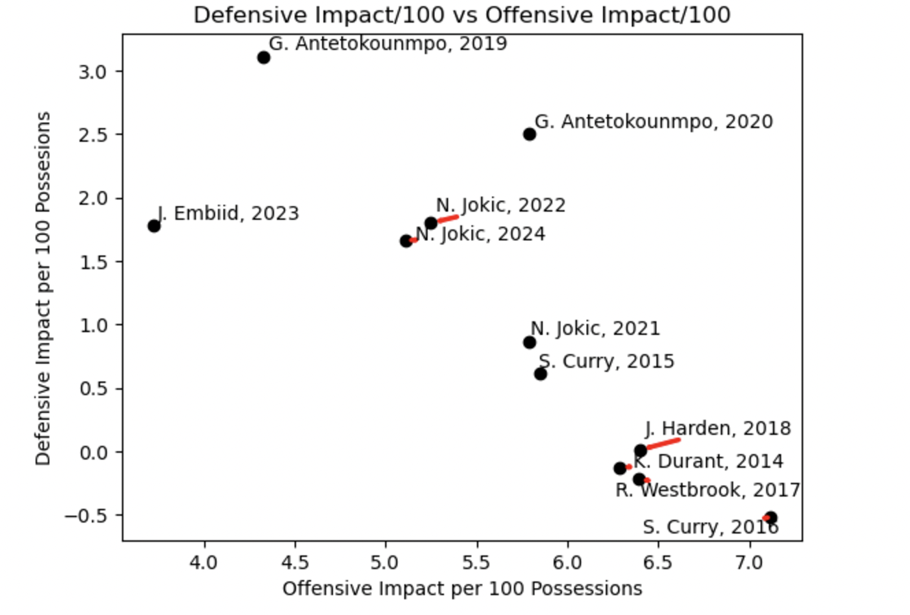

The NBA's Databall MVPs, Ranked
By Preston Bhat | January 13, 2025

Introduction
NBA accolades fuel much of the proverbial fire in discourse among league fans. Whether utilized in free agency/trade grades, current player comparisons, or all-time rankings, such accolades, voted on by members of the NBA media, shape narratives and opinions about players for months, years, or even decades. Year-end debates over who is most deserving often become very heated, with fans, players, and media sometimes feeling that the “wrong” player took home the award and had a “weak” season relative to historical standards. The best example of such a phenomenon is the award for the league’s most valuable player, often seen as the pinnacle achievement of an individual basketball career. But, due to the many distinct preferences for pace and playstyle among members of the basketball community, determining the “true” MVP ultimately remains a subjective endeavor.
However, with improvements in advanced analytics over the last decade, we can retroactively look back and better quantify just how good a player was, and get closer to understanding the historical context and gravity of each MVP award from the last decade.
Through an evaluation of offensive output, defensive contributions, and overall impact on the game, here are the NBA’s Databall MVPs, ranked.
Definitions:
Before diving into the data, we first have to define the terms utilized throughout the article.
On offense:
- Shot Usage: The number of true shot attempts (free throws + field goals) attempted by a player per 100 offensive possessions, which functions as a percentage of a team’s shots taken by a player
- Points/75: The number of points scored by a player per 75 offensive possessions, to adjust for differences in pace
- Self-ORB Adjusted rTS%: The league-adjusted true shooting percentage for a player adjusted for the percentage of their own misses that they recover
- Scoring TOV%: The number of turnovers (non-passing) that a player commits per true shot attempt
- O-LEBRON: The offensive component of a box score/RAPM hybrid that blends counted stats with weighted coefficients through regression analysis and pure lineup plus/minus data with linear algebra and ridge regression to isolate for player impact on a per 100 possessions
On defense:
- rSTOP%: The league-adjusted defensive stops forced by a player (self-recovered blocks, steals, and offensive turnovers forced)
- rRimFrequency: The league-adjusted difference in rim attempts for the opposing team when a player was on vs off the floor
- Points Saved/100: The field goal percentage difference when a player contests a shot, based on the number of shot contests per 100 defensive possessions
- D-LEBRON: The defensive component of a box score/RAPM hybrid that blends counted stats with weighted coefficients through regression analysis and pure lineup plus/minus data with linear algebra and ridge regression to isolate for player impact on a per 100 possessions
Data Exploration
Let’s first look into the offensive part of these MVPs’ games. The first dataset compares shot usage with points per 75.
Here, we can see a very clear and obvious association between shot attempts and points. More specifically, the bottom right part of the graph identifies players who we identify as “efficient,” utilizing fewer shots to get their points. Players like 2023 Joel Embiid and 2016 Stephen Curry stand out as high points, low shot usage players, while 2017 Russell Westbrook is a clear outlier in terms of shot attempts, boasting a 40% rate with a lower-than-expected scoring profile.
To truly examine efficiency, however, let’s look at the self-ORB adjusted rTS% rates compared to scoring proficiency, which gives credit to around the basket play by adjusting for second chance points generated from putbacks and tip-ins.
Here, we again see ‘17 Westbrook as lackluster (relative to his fellow MVPs), while the prolific scoring seasons of 2022 Nikola Jokic, ‘15 Curry, and ‘16 Curry stand out as the gold standards for efficiency (> +10 adjusted rTS%!) in this era.
For the last set of offensive data, let’s examine the scoring turnover rate compared to points scored. This adds another angle to the offensive evaluation of these players, as turnovers significantly hinder the overall offensive output of the team by creating empty possessions.
This dataset shows a couple of familiar names, with ‘21 and ‘24 Jokic, ‘15 and ‘16 Curry, and ‘17 Westbrook all achieving a sub-7% turnover rate, far surpassing league averages on ridiculous volume.
Through the offensive portion of the evaluation, ‘16 Curry comes out as seemingly the top offensive player during this period, with a couple of Jokic seasons not far behind.
As for the defensive part of this analysis, let’s start with a comparison between relative rim frequency and defensive stop rate. These two metrics evaluate high-value defensive play that either shows a reduction in the highest-value shots on the court or forces empty possessions entirely.
From this data, we notice that ‘14 Durant puts up the worst stop rate and rim deterrence frequency, showcasing his weaknesses in affecting the game on the other side of the ball. On the other hand, note that ‘16 Curry and ‘23 Embiid are seasons with strong presences in both metrics. However, it is worth noting that these metrics (as with defense as a whole) are more noisy than offense, as relative rim attempt rates have a lot to do with lineup collinearity (or teammates who often share the floor) and stop rate doesn’t reflect blow-bys due to gambling for steals or missed rotations.
The next defensive graph showcases points saved through contested shots versus defensive stop rate, giving us a way to evaluate players' impact on opponent shooting in addition to the aforementioned turnover creation.
In this penultimate data visualization, we notice that most of the guards (and Jokic) lack in their ability to impact opponent shot accuracy, while the bigs (and ‘14 Durant) create observable effects on the other team’s shooting. Giannis Antetokounmpo, who has a reputation as one of the better defenders in the league, truly differentiates himself here, with his ‘19 and ‘20 (DPOY) seasons ranking as the best two in this category over this span.
Lastly, with regard to impact, we can compare the offensive and defensive on-court value added by these players through their O-LEBRON and D-LEBRON components.
Similar to our prior visualizations, we observe that ‘16 Curry has the strongest offensive season, with fellow guards and ‘14 Durant in the same region of impact. On the defensive side, the bigs, led by stellar Antetokounmpo seasons, bring the highest value, reaffirming common beliefs about the impact of close-to-the-basket players on that end of the floor.
Conclusion
After our extensive exploration into the various facets of player contributions on both sides of the ball, here are the rankings of the best MVPs in the databall era:
11. 2017 Russell Westbrook
Westbrook lands himself in the lowest spot on the list, largely due his inefficient offense being middle of the pack without a significant defensive impact. His lack of turnovers and significant offensive rebounding abilities in this season do make up for the inefficient scoring, but due to his lack of turnover forcing and ability to affect opponent shooting on the other side of the ball places him here.
10. 2023 Joel Embiid
Embiid comes next, with great defensive numbers but the least impactful offense of any player on the list. He has some of the largest traces of impact against opponents shooting at the rim, but didn’t raise the team's offensive ceiling enough due to flaws in his ball handling, passing, and offensive rebounding.
9. 2014 Kevin Durant
Durant’s sole MVP season (and the first of the databall era) occupies the ninth position, blending above average defense with excellent shooting offensively. He provided a larger negative effect on opponent shooting than many of the guards, but lost value due to minimal turnover creation. Offensive, he took care of the ball and had one of the strongest pure shooting years on the list.
8. 2015 Stephen Curry
The first of Curry’s two MVP seasons takes spot number eight, with passable defense and efficient offense that doesn’t quite rival his season the following year. He forced more turnovers than the average defender with no noticeable impact on opponent shooting, and his elite (but not quite yet peak) shotmaking and carefulness with the ball give him a solid offensive showing relative to his counterparts.
7. 2018 James Harden
This version of Harden falls at seventh on the list, with a prolific scoring and playmaking year offensively covering for the general lack of value generated defensively. Even when factoring in turnovers and offensive rebounds, Harden proved to be an extremely efficient scorer on high volume compared to his peers. His defense however, wasn’t particularly notable in terms of impact on opponent shooting, turnovers, or rebounds.
6. 2021 Nikola Jokic
The weakest of Jokic’s 3 MVPs comes in at number six, with an extremely versatile offensive game compounded with underrated defensive value. His high scoring efficiency and offensive creation aside, the hidden value add in Jokic’s game this year (like most years) was his extending/ending of possessions through his excellent rebounding ability, significantly increasing his team’s scoring opportunities relative to opponents over the course of the season.
5. 2019 Giannis Antetokounmpo
Antetokounmpo’s first MVP slots in at number five, with a somewhat raw but effective offensive game backed up with the best defensive season on the list. He wasn’t quite as well-rounded of an offensive player, as seen with his high turnover numbers, but he still managed to increase efficiency through offensive rebounds. Defensively, he was a monster, with an absurd effect on opponent shooting, solid rebounding numbers, and strong turnover creation.
4. 2024 Nikola Jokic
Jokic’s most recent full season campaign takes spot number four, with slight improvements offensively compared to 2021 and a more impactful defensive showing. Jokic grabbed more offensive rebounds and turned the ball over less than in years prior, marginally increasing his adjusted efficiency numbers. While his rim protection numbers were still around neutral, the larger step forward involved his defensive rebounding, successfully minimizing opponent second chance points more than he ever had before.
3. 2020 Giannis Antetokounmpo
The other Antetokounmpo MVP year lands at top three, with a stronger offensive campaign and similar defensive impact metrics. He took on a larger role in the offense this season, and despite slightly less efficient scoring, managed to decrease his turnover numbers. His impact on opponent shooting remained steady, making this season the stronger of his two-way MVP campaigns.
2. 2022 Nikola Jokic
The second best MVP season of the group belongs to the ‘22 version of Jokic, combining his most efficient full offensive season to date with consistent defensive rebounding, buoying his impact on that end of the floor. Like the ‘20 Antetokounmpo season, he took on a slightly larger burden offensively and improved his adjusted scoring efficiency while simultaneously capturing enough rebounds to be a positive asset on the defensive side.
1. 2016 Stephen Curry
Curry’s legendary 2016 campaign claims the top spot, combining generational offensive impact with serviceable defense. The biggest difference between this version of Curry and MVP season from the year prior is the sheer volume of his offensive, taking major steps up in shot usage, while decreasing turnovers and actually increasing his efficiency. And while his defense didn’t take any major strides forward, his offensive prowess massively raised his team’s ceiling with him on the court, making this season more than worthy of number one position on the list.